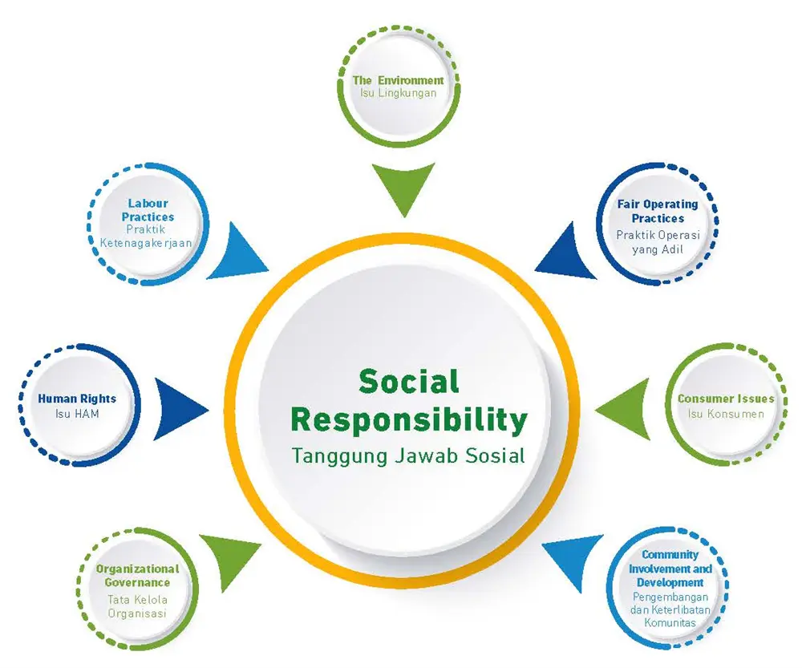

CSR Program
Program Harmoni Tiga Roda
Program CSR Indocement dikenal dengan merek Harmoni Tiga Roda, yang mencerminkan tiga pilar utama: Manusia, Komunitas, dan Lingkungan. Program ini berfokus pada komunitas di sekitar wilayah operasional pabrik Indocement yang tersebar di enam lokasi di Indonesia.
Sejak diluncurkan, program Harmoni Tiga Roda telah memberikan dampak positif bagi ratusan ribu masyarakat melalui berbagai inisiatif di bidang pendidikan, kesehatan, pemberdayaan ekonomi, dan pelestarian lingkungan.

Empat Pilar Program CSR
Pendidikan
Mendukung akses pendidikan berkualitas melalui beasiswa, pembangunan fasilitas sekolah, dan program pelatihan guru.
Kesehatan
Meningkatkan akses layanan kesehatan masyarakat melalui klinik, posyandu, dan program kesehatan preventif.
Pemberdayaan Ekonomi
Membangun kemandirian ekonomi masyarakat lokal melalui pelatihan keterampilan, pendampingan UMKM, dan akses modal.
Lingkungan Hidup
Menjaga kelestarian lingkungan melalui penghijauan, pengelolaan limbah, dan edukasi lingkungan hidup.